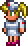
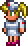

Terraria Guides

 
 
Guides
Guide:Getting started
Welcome to Terraria! Going into such a vast game like Terraria may seem overwhelming for newer players, but that couldn't be further from the truth! This guide will help you get started on your journey through your world. It will cover gameplay basics like character creation, combat, and early-game tips, and direct you to other guides for further advice. Keep reading for a step-by-step tutorial on how to begin Terraria!
Guide:Walkthrough
When progressing through Terraria, many players can be confused about where they should go and what they should do next. Terraria is an open-ended game: Players are not forced to go anywhere or do anything. You are free to set your own goals and follow through with them, whether you are a builder, fighter, explorer, collector, or whatever else. This walkthrough merely aims to provide a logical order of progression through Terraria’s many different biomes, generally in order of increasing difficulty. It is recommended, but there is certainly no requirement to visit each biome, or even in this order if you don't want to.
Guide:Class setups
Terraria has no formal player class or leveling system. However, weapons can be grouped into four ( five) distinct categories based on their damage type – melee, ranged, magic, and summoning. Each class has its strengths and weaknesses and has a wide variety of weapons to choose from.